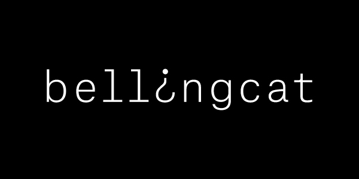

Investigation | Analyse
Bellingcat
L'OSINT permet de faire émerger des informations, mais c'est l'analyse qui leur donne du sens. Bellingcat est un exemple de journalisme d'investigation qui utilise l'OSINT dans leur approche.
Ouvrir la ressource